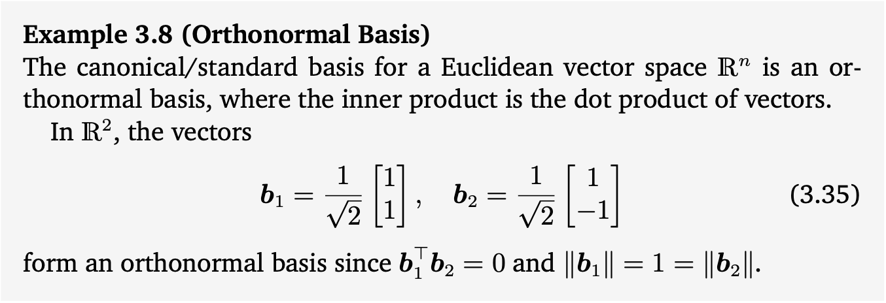

Table of Contents
Orthonormal Basis
Definition 3.9 (Orthonormal Basis)
$n$차원의 벡터 공간 $V$과 $V$에서의 basis 를 생각했을 때, $\forall\ i,j=1,…,n$ 에서 다음을 만족하면 이를 orthonormal basis(ONB)라고 부릅니다.
만약에 (3.33)만 만족한다면 이 basis는 orthogonal basis라고 부릅니다. (3.34)는 모든 basis vector의 length나 norm이 1임을 의미합니다. 따라서 orthonormal basis라는 것은 basis가 서로 orthogonal하면서, length나 norm이 1인 basis를 말하는 것입니다.
Chapter 2.6.1의 내용을 다시 생각해보면, vector들의 집합으로부터 스팬된 vector space에서의 basis를 찾기 위해서 가우시안 소거법을 사용했었습니다.
우리에게 non-orthogonal이고 unnormalized basis vecotr의 집합인 이 주어졌다고 생각해보십니다.
이때, orthonormal basis를 얻기 위해서는 다음과 같은 과정을 반복합니다.
- unnormalized basis vector들의 집합들을 concatenate해서 행렬 를 만듭니다.
- concatenate해서 만든 행렬을 augmented matrix 형태로 변경합니다.
- augmented matrix form의 행렬을 가우시안 소거법을 적용합니다.
위와 같이 반복적인 작업을 통해서 orthonormal basis 를 구하는 방법을 Gram-Schmidt process라고 부릅니다.
